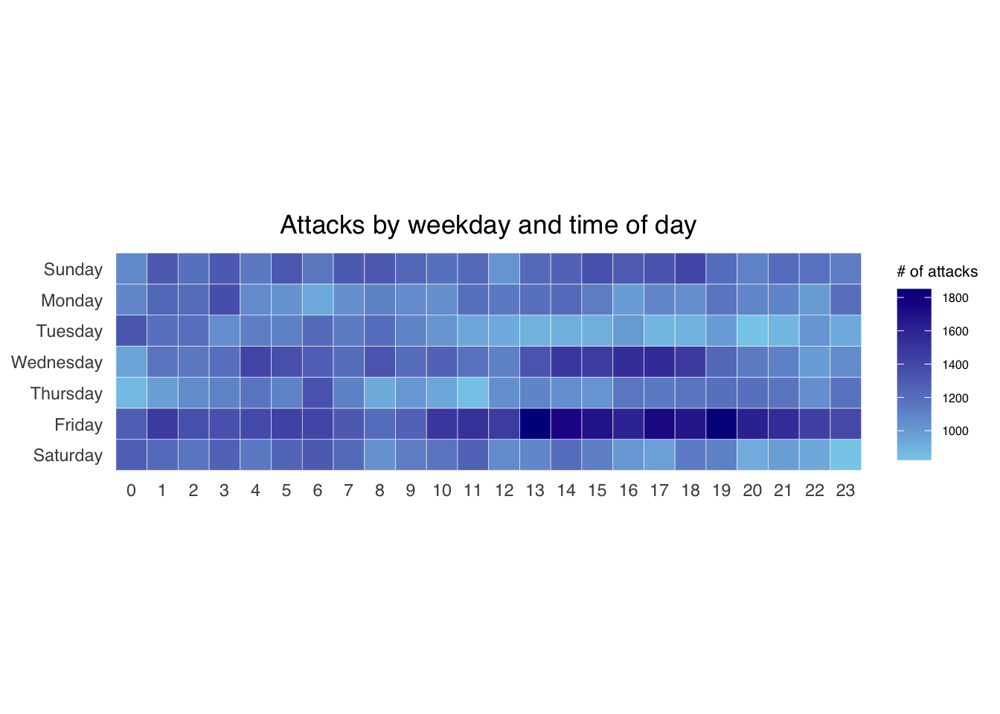
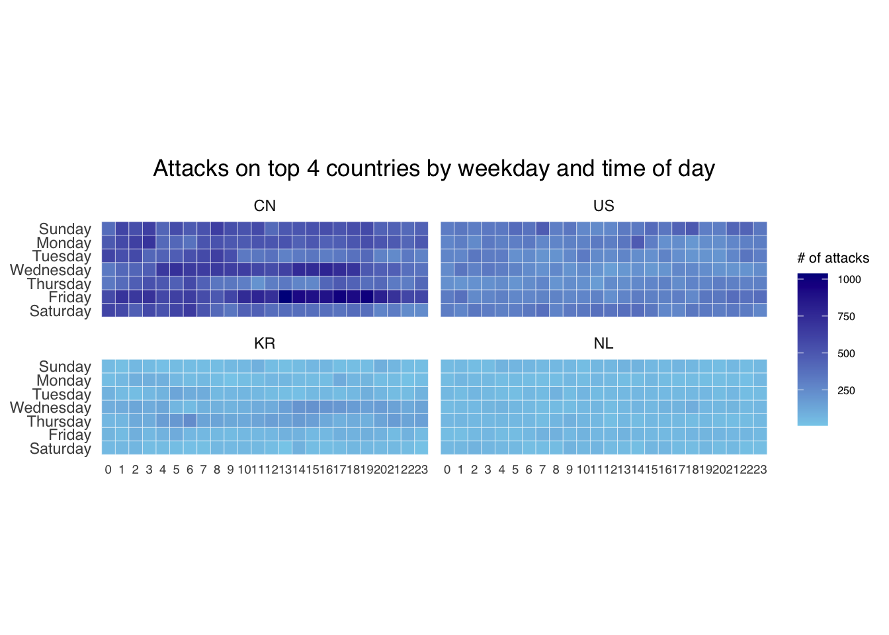
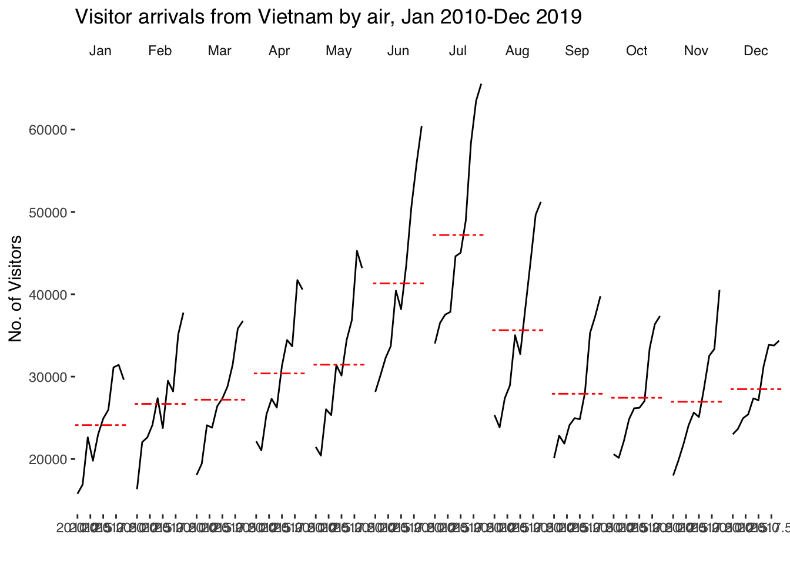
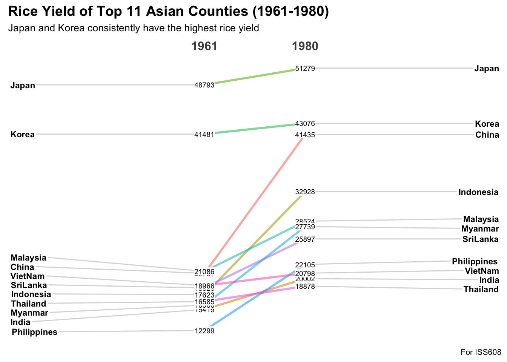

pacman::p_load(scales,
viridis,
lubridate,
ggthemes,
gridExtra,
readxl,
knitr,
data.table,
tidyverse,
CGPfunctions)Hands-on Exercise 7: Visualising and Analysing Time-Oriented Data
1 Overview
This hands-on exercise covers Chapter 17: Visualising and Analysing Time-oriented Data. I learned about the following:
- plotting a calendar heatmap by using ggplot2 functions,
- plotting a cycle plot by using ggplot2 function,
- plotting a slopegraph
- plotting a horizon chart2 Getting Started
2 Getting Started
2.1 Loading the required packages
For this exercise we will use the following R packages:
- scales
- viridis
- lubridate
- ggthemes
- gridExtra
- readxl
- knitr
- data.table
- tidyverse
- CGPfunctions - Added for
newggslopegraph()
3 Plotting Calendar Heatmap
3.1 Importing the Data
We will import eventlog.csv file into the RStudio environment
attacks <- read_csv("data/eventlog.csv")
kable(head(attacks))| timestamp | source_country | tz |
|---|---|---|
| 2015-03-12 15:59:16 | CN | Asia/Shanghai |
| 2015-03-12 16:00:48 | FR | Europe/Paris |
| 2015-03-12 16:02:26 | CN | Asia/Shanghai |
| 2015-03-12 16:02:38 | US | America/Chicago |
| 2015-03-12 16:03:22 | CN | Asia/Shanghai |
| 2015-03-12 16:03:45 | CN | Asia/Shanghai |
3.2 Data Preparation
We want to create the heatmap with the day of the week and hour of day. We will add columns corresponding to this.
make_hr_wkday <- function(ts, sc, tz) {
# Code changed. See note below
local_times <- ymd_hms(ts) %>% with_tz(tzone = tz[1])
dt <- data.table(
source_country = sc,
wkday = weekdays(local_times),
hour = hour(local_times)
)
return(dt)
}
Issue with original code
Consider the following:
attacks %>% slice(2:3) %>% kable()| timestamp | source_country | tz |
|---|---|---|
| 2015-03-12 16:00:48 | FR | Europe/Paris |
| 2015-03-12 16:02:26 | CN | Asia/Shanghai |
As Paris is in GMT+1 (because of Daylight Savings Time) and Shanghai is in GMT+8, we are expecting the local times to be 2015-03-12 18:00:48 and 2015-03-13 00:02:26, respectively.
However, the original code does not generate these times, and consider the supplied timestamp as the time in the local zone. However, standard practice is these times are in UTC, which need to be converted in the local time.
The original code might be correct with the context (which I have no way of verifying). However, I still wanted to challenge myself to convert if the supplied timestamps are in UTC.
Original
ymd_hms("2015-03-12 16:00:48", tz = "Europe/Paris"[1], quiet=TRUE)[1] "2015-03-12 16:00:48 CET"ymd_hms("2015-03-12 16:02:26", tz = "Asia/Shanghai"[1], quiet=TRUE)[1] "2015-03-12 16:02:26 CST"My adjustments
ymd_hms("2015-03-12 16:00:48") %>% with_tz(tzone = "Europe/Paris"[1])[1] "2015-03-12 17:00:48 CET"ymd_hms("2015-03-12 16:02:26") %>% with_tz(tzone = "Asia/Shanghai"[1])[1] "2015-03-13 00:02:26 CST"wkday_levels <- c('Saturday', 'Friday',
'Thursday', 'Wednesday',
'Tuesday', 'Monday',
'Sunday')
attacks_cleaned <- attacks %>%
group_by(tz) %>%
do(make_hr_wkday(.$timestamp,
.$source_country,
.$tz)) %>%
ungroup() %>%
mutate(wkday = factor(
wkday, levels = wkday_levels),
hour = factor(
hour, levels = 0:23))
kable(head(attacks_cleaned))| tz | source_country | wkday | hour |
|---|---|---|---|
| Africa/Cairo | BG | Saturday | 22 |
| Africa/Cairo | TW | Sunday | 8 |
| Africa/Cairo | TW | Sunday | 10 |
| Africa/Cairo | CN | Sunday | 13 |
| Africa/Cairo | US | Sunday | 17 |
| Africa/Cairo | CA | Monday | 13 |
3.3 Building the Calendar Heatmap
We will use geom_tile() to generate the tiles for the heatmap.
grouped <- attacks_cleaned %>%
count(wkday, hour) %>%
ungroup() %>%
na.omit()
ggplot(grouped,
aes(hour,
wkday,
fill = n)) +
geom_tile(color = "white",
size = 0.1) +
theme_tufte(base_family = "Helvetica") +
coord_equal() +
scale_fill_gradient(name = "# of attacks",
low = "sky blue",
high = "dark blue") +
labs(x = NULL,
y = NULL,
title = "Attacks by weekday and time of day") +
theme(axis.ticks = element_blank(),
plot.title = element_text(hjust = 0.5),
legend.title = element_text(size = 8),
legend.text = element_text(size = 6) )
3.4 Generating data per country
Next, we will plot the heatmaps per country. To do that, we need to do more data preparation.
We will first calculate the attacks per country.
attacks_by_country <- count(
attacks_cleaned, source_country) %>%
mutate(percent = percent(n/sum(n))) %>%
arrange(desc(n))Next, we will count the attacks per wkday, per hour for each of the top4 countries.
top4 <- attacks_by_country$source_country[1:4]
top4_attacks <- attacks_cleaned %>%
filter(source_country %in% top4) %>%
count(source_country, wkday, hour) %>%
ungroup() %>%
mutate(source_country = factor(
source_country, levels = top4)) %>%
na.omit()3.5 Plotting the heatmaps
Using the prepared data, we generate the heatmaps using facet.
ggplot(top4_attacks,
aes(hour,
wkday,
fill = n)) +
geom_tile(color = "white",
size = 0.1) +
theme_tufte(base_family = "Helvetica") +
coord_equal() +
scale_fill_gradient(name = "# of attacks",
low = "sky blue",
high = "dark blue") +
facet_wrap(~source_country, ncol = 2) +
labs(x = NULL, y = NULL,
title = "Attacks on top 4 countries by weekday and time of day") +
theme(axis.ticks = element_blank(),
axis.text.x = element_text(size = 7),
plot.title = element_text(hjust = 0.5),
legend.title = element_text(size = 8),
legend.text = element_text(size = 6) )
4 Plotting Cycle Plot
4.1 Data Import
air <- read_excel("data/arrivals_by_air.xlsx")4.2 Deriving month and year
air$month <- factor(month(air$`Month-Year`),
levels=1:12,
labels=month.abb,
ordered=TRUE)
air$year <- year(ymd(air$`Month-Year`))4.3 Extracting the target country
Vietnam <- air %>%
select(`Vietnam`,
month,
year) %>%
filter(year >= 2010)4.4 Computing monthly averages by month
We will use this to plot the reference line
hline.data <- Vietnam %>%
group_by(month) %>%
summarise(avgvalue = mean(`Vietnam`))4.5 Plotting the graph
ggplot() +
geom_line(data=Vietnam,
aes(x=year,
y=`Vietnam`,
group=month),
colour="black") +
geom_hline(aes(yintercept=avgvalue),
data=hline.data,
linetype=6,
colour="red",
size=0.5) +
facet_grid(~month) +
labs(axis.text.x = element_blank(),
title = "Visitor arrivals from Vietnam by air, Jan 2010-Dec 2019") +
xlab("") +
ylab("No. of Visitors") +
theme_tufte(base_family = "Helvetica")
5 Plotting Slope Graph
5.1 Data import
rice <- read_csv("data/rice.csv")5.2 Generating Slopegraph
rice %>%
mutate(Year = factor(Year)) %>%
filter(Year %in% c(1961, 1980)) %>%
newggslopegraph(Year, Yield, Country,
Title = "Rice Yield of Top 11 Asian Counties (1961-1980)",
SubTitle = "Japan and Korea consistently have the highest rice yield",
Caption = "For ISS608")
6 Reflections
These visualization techniques are indeed useful. The Calendar Heatmap is one I am most familiar with as it is used by Github to visualize activity. Some people even aim to make all tiles green and therefore make commits daily.
The Cycle graph looks the most straightforward as they seem to be just facets (which has already been covered below.
Lastly, the Slope Graph is most appropriate to visualize trends, even for a high number of categories.
However, in terms of graph/network data, which is needed for MC3 that we will be doing for Take-home Ex3, the techniques above may not be enough. Therefore, I will still rely on other techniques outside this or rely on my own creativity. The latter is more exciting for me as I want to challenge myself to do what hasn’t been done.